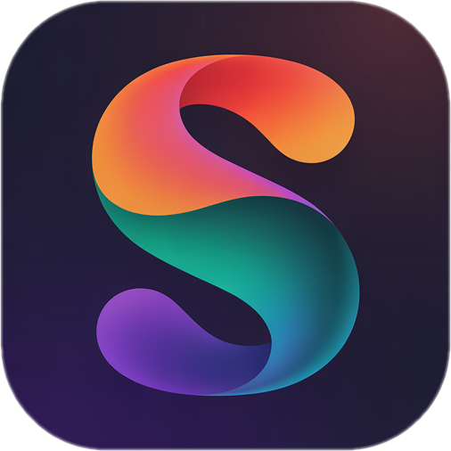

الصورة المراد تحويلها:

تعليمات التحويل:
1. يمكنك استخدام أحد المواقع التالية لتحويل الصورة:
2. قم بتحميل الصورة المعروضة أعلاه إلى الموقع المختار.
3. اضبط إعدادات التحويل للحصول على أفضل جودة (إذا كانت متاحة).
4. قم بتنزيل ملف SVG الناتج.
5. احفظ الملف باسم: fdgsfdsfdfsfdxcvcvxvcxvcxcvx.svg في نفس مجلد المشروع.